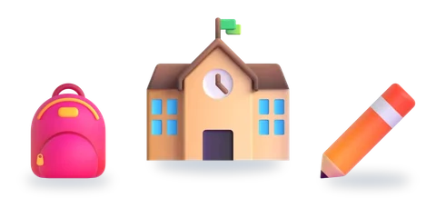
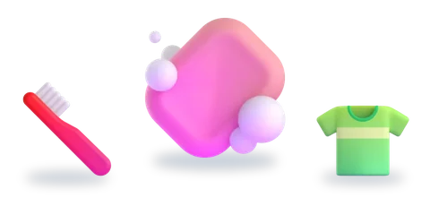
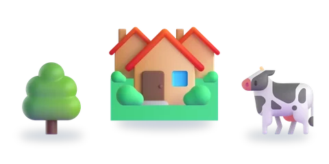
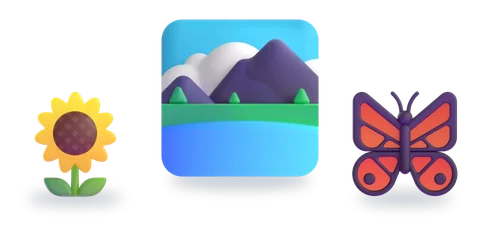

المستوى الأول
ست وحدات، لكلّ وحدة خمسة أسابيع
اختر الوحدة، ثمّ الدرس.
 الوحدة 1الأسرة6 دروس
الوحدة 1الأسرة6 دروس
الوحدة 2المدرسة5 دروس
الوحدة 3الهندام والنظافة6 دروس
الوحدة 4الحي والدوار6 دروس
الوحدة 5البيئة الطبيعية6 دروس الوحدة 6اللعب والمرح8 دروس
الوحدة 6اللعب والمرح8 دروس
الرسوم: Twemoji (CC-BY 4.0) وFluent Emoji من Microsoft (MIT). الأصوات: صوت عربي اصطناعي.